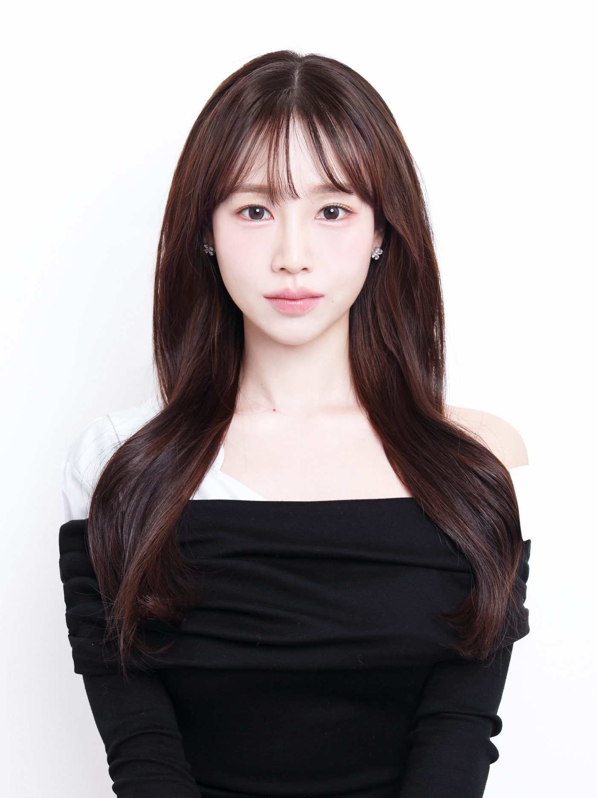

강한선배 소개 · 대표 인사말
자리만 빌려주는 독서실은많습니다. 저희는 아이를책임지는 독서실입니다.
강남·서초·송파 자기주도학습 전문학원에서 최연소 원장을 지냈고,
'100% 성적 상승'으로 이름을 알렸습니다.
왜 강한선배를 시작했나
저도 입시를 치렀습니다. 그때 제일 힘들었던 건 공부보다 혼자라는 막막함이었습니다. 어디로 가야 할지 알려 주고, 주저앉았을 때 다시 일으켜 줄 사람이 딱 한 명만 있었으면 했습니다.
그래서 강한선배에는 그런 사람을 두었습니다. 최상위권 대학 재학생 멘토와 운영 조교가 아이의 출결부터 공부, 마음 상태까지 가까이에서 관리합니다. 그리고 상벌점, 순찰, 멘토링 기록까지 관리한 내용은 전부 부모님께 보내 드립니다.
아이를 맡기신 부모님이 제일 궁금하신 건 "오늘 우리 아이가 어떻게 지냈을까"일 겁니다. 그 질문에는 매달 한 장짜리 리포트로 답하겠습니다. 부모님께 보여드리지 못할 관리라면 애초에 하지 않습니다.
강한선배 대표원장강한지
약력
대표원장이 걸어온 길.
강한선배 관리형 독서실(KHSB) 대표원장
강남·서초·송파 자기주도학습 전문학원 최연소 원장
대학 입시 전문 컨설턴트 · 자기주도학습 코칭 다수
'강남·서초·송파 100% 성적 상승'으로 알려진 학생 관리 방식
운영 철학
강한선배가
지키는 세 가지.
기록은 전부 보여드립니다
관리한 기록은 매달 리포트로 정리해 보내 드립니다. 벌점도 사유와 날짜까지 적어서 보여드립니다.
힘든 날을 먼저 알아봅니다
성적이 떨어진 날에는 저희가 먼저 알아채고 말을 겁니다. 아이가 다시 책상에 앉을 때까지 옆에 있습니다.
최상위권 대학 선배가 맡습니다
서울대·연세대·고려대 등 최상위권 대학 재학생 중 아이의 성적과 성향에 맞는 멘토가 담임으로 배정되어 공부 계획과 마음 관리를 맡습니다. 같은 입시를 몇 년 전에 직접 치렀기 때문에 아이가 어디서 막히는지 압니다.
CHIEF DIRECTOR · 전체 총괄
성적이 오르내려도,
이번 주 할 일은 분명하게.
강한선배 운영 전체를 맡고 있습니다. 멘토진의 학습 지도와 운영진의 생활 관리가 따로 놀지 않도록 매주 맞춰 보고, 목표 대학에서 거꾸로 계산해 지금 해야 할 공부를 정합니다.
성적은 오를 때도 있고 떨어질 때도 있습니다. 그럴 때도 아이가 이번 주에 할 일만큼은 헷갈리지 않게 잡아 두는 것이 총괄의 일입니다.
정지훈 총괄 소개 보기운영진
작은 흐트러짐 하나도
놓치지 않는 운영 조교.
매 교시 출결 확인, 20분 단위 순찰, 자세와 생활 태도까지. 운영 조교가 아이의 하루를 꼼꼼하게 확인하고 기록합니다.
원장 칼럼
원장이 쓰는
교육 이야기.